What runs on this Mac and why — client mods, audio routing, and local AI tooling. Each entry includes the part that actually cost time to figure out, because the install command is never the hard bit.
Patches the Spotify desktop client to load custom apps, extensions and themes.
spicetify apply silently does
nothing and prints "Preprocessed Spotify data is outdated". The real fix is
spicetify restore backup apply. The same applies when removing a custom
app — a plain apply leaves its spicetify-routes-* files behind.
expose_apis = 0 renders the entire client blank —
ReferenceError: Spicetify is not defined. The patched modules reference a
global that never gets injected. It must be 1.
custom_apps is pipe-separated.
spicetify config custom_apps a,b writes one broken entry, and reading the
value back gives one app per line — collapsing that output fuses the names
together.
Spicetify.Player.next()
calls, and the internal queue (PlayerAPI._queue._queueState) sat at
nextUp: 0, queued: 0 the whole time — Spotify's own queue-builder had
stalled rather than pulling in more tracks. Turning off Autoplay and clearing the local
cache both held under test and neither fixed it. What did: unliking a few recently-added
Liked Songs — one bad track (removed, region-locked, whatever) was likely choking the
rebuild before it ever reached the rest of the library.
Spotify removed the audio-analysis endpoint its client exposed, so every
Spicetify visualizer built on Spicetify.getAudioData() quietly fell back to
a decorative mode — a fixed Math.sin(now/700) cycle. Measured on two
different tracks, the rings peaked every 4393 ms and 4356 ms: a clock, not the music.
Spotify's renderer also ships without a microphone entitlement, so no extension can
capture audio to make up for it — getUserMedia returns
"Permission denied by system". The fix is to capture outside Spotify and draw
inside it: a local process reads a loopback device, computes the FFT, and streams frames
over a WebSocket to the patched visualizer.
The StarryNight theme pushed until the client stops reading as Spotify. The cover becomes the spinning label of a vinyl record — grooves, dust, a tonearm that drops on play, a glow that pulses on every beat and a progress ring you can click to seek. Behind it, a night sky with 25 live-switchable schemes (one re-colours from each cover), warp streaks on skip, meteor showers on loud sections, and a gold star left in the sky for every liked song. A WebGL startup intro collapses 26k stars into the record before it flies into place. Top bar is a glass dock; type is Big Caslon, Futura and Avenir Next. repo
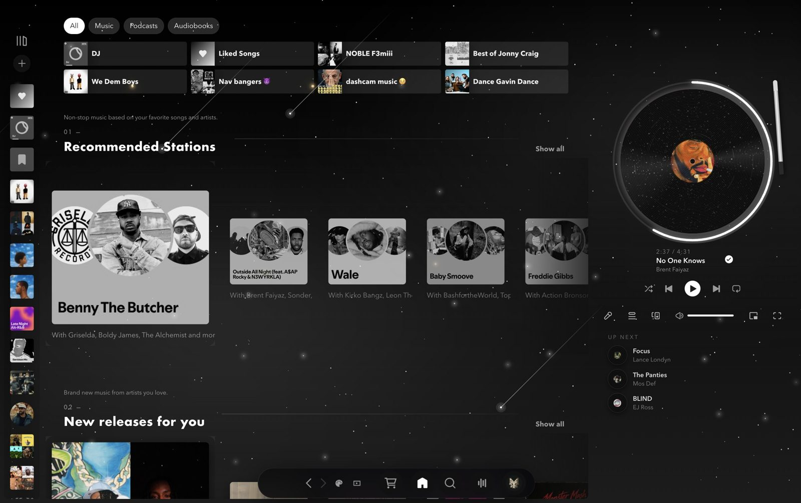
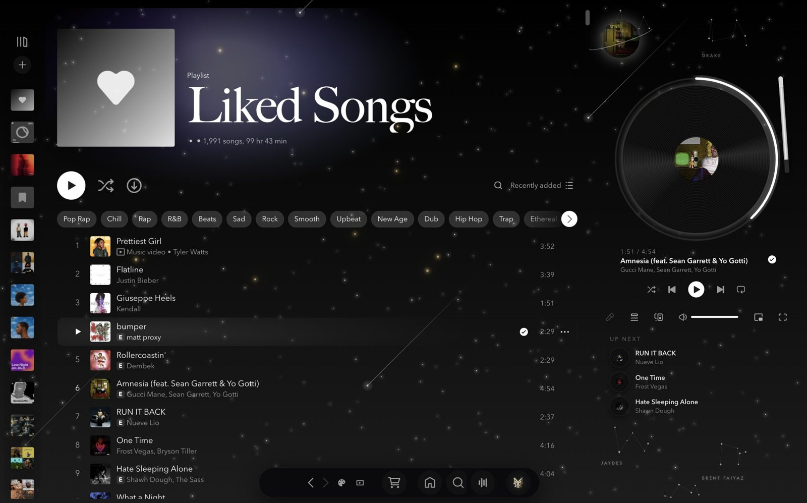
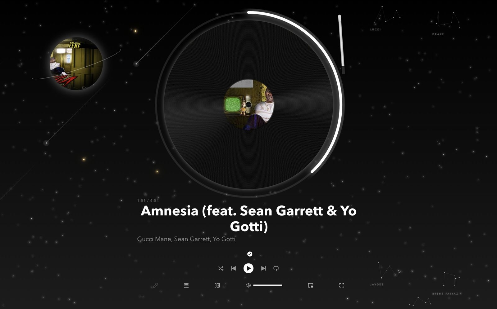
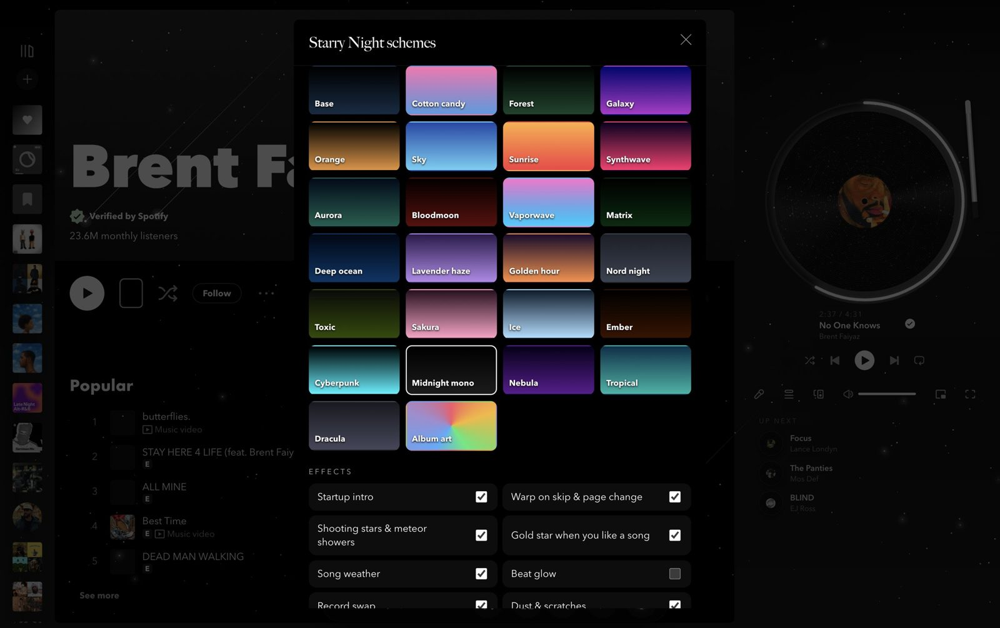
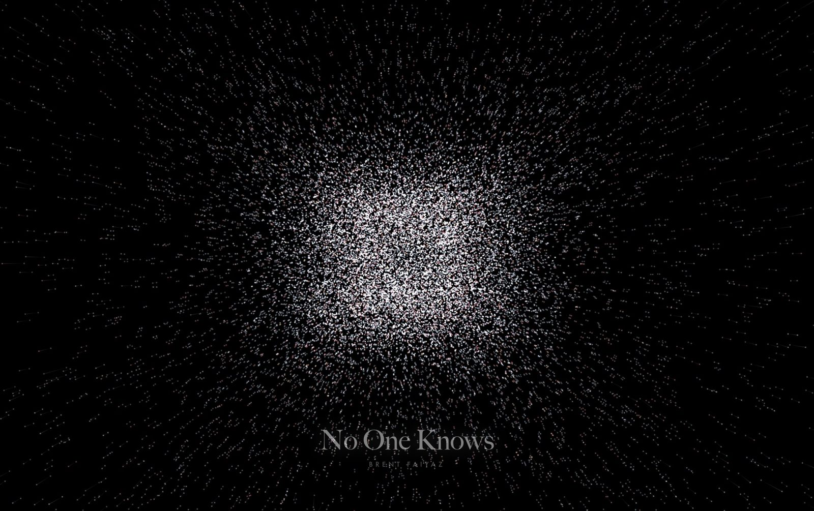
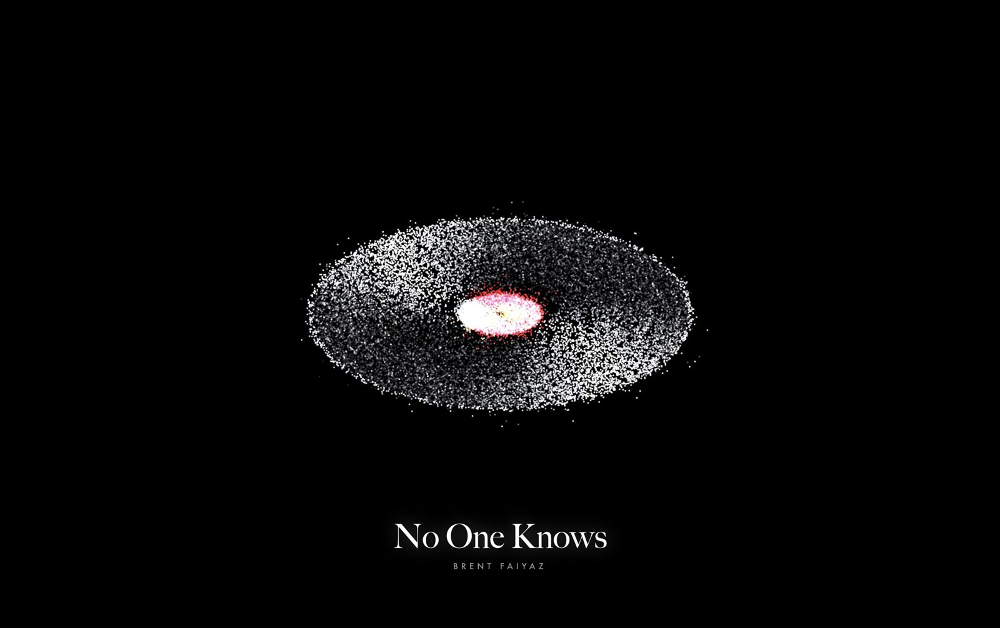
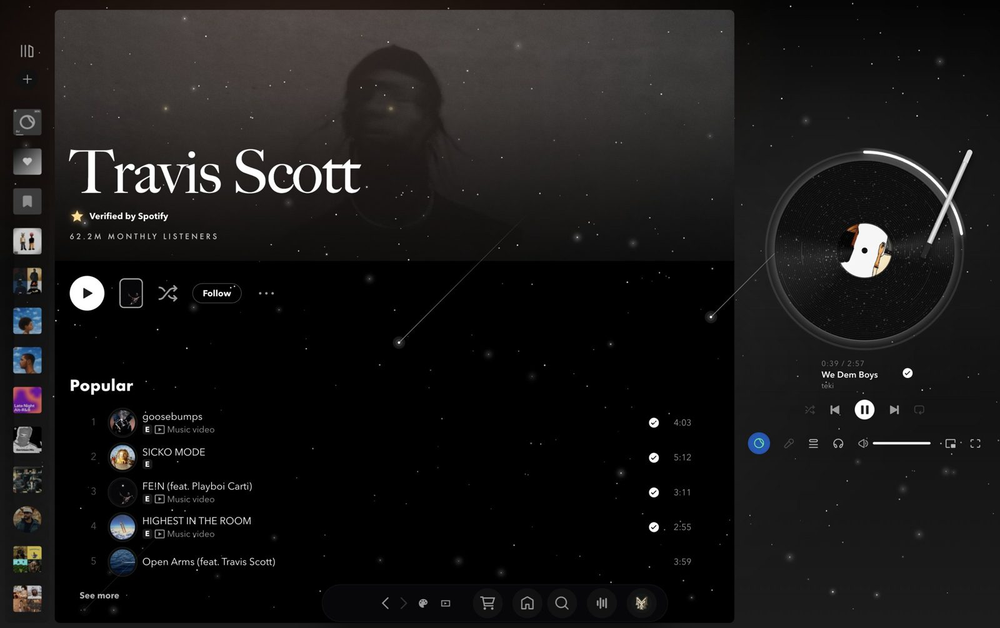
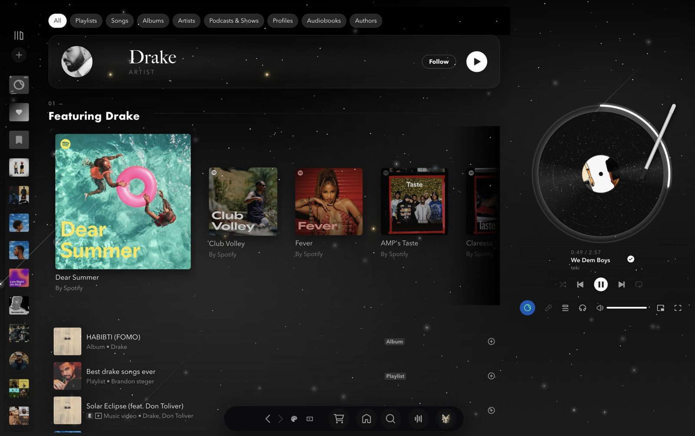
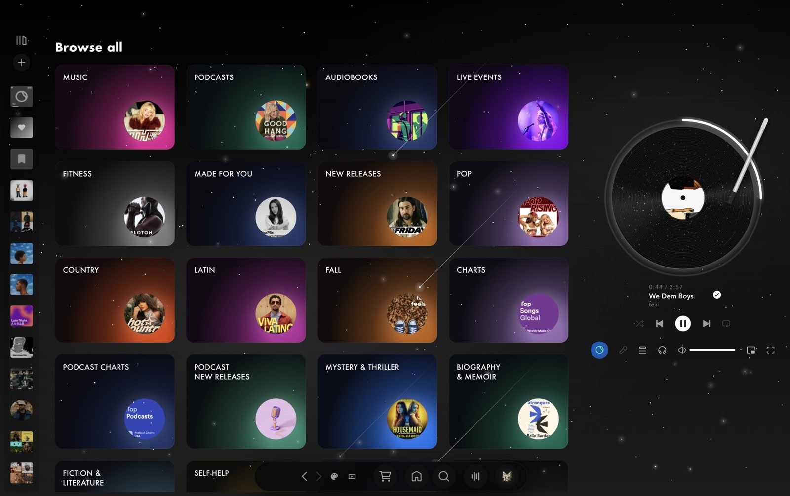
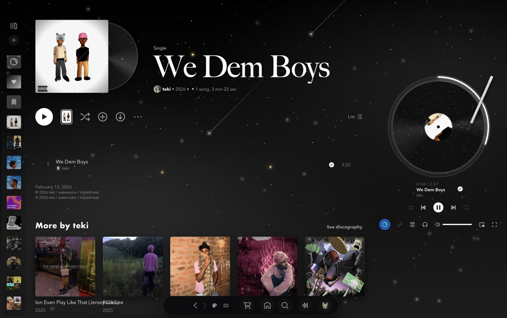
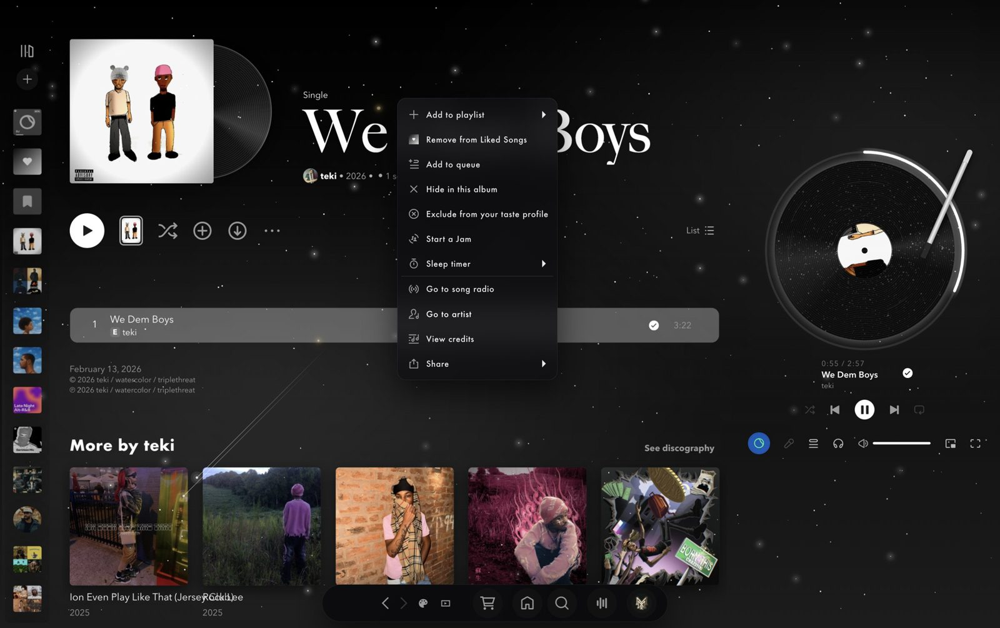
requestAnimationFrame timestamp can be a few ms earlier than the
performance.now() taken as the start time. The negative elapsed time went into
Math.pow(t, 2.2), which is NaN for a negative base — and one
NaN uniform turned every vertex position into NaN. Clamp elapsed time at zero.
Spicetify.getAudioData() still carries the track's tempo, loudness and
mode, which is what the sky's "weather" uses instead.
ab67616d00004851), which
looks blocky blown up as a record label. Swapping the id segment for
ab67616d0000b273 gets the 640 px image.
animation. They already
run a twinkle animation and the shorthand replaces it. Moving them with the separate
translate property keeps the twinkle.
spicetify apply prints "error" when nothing is wrong — its own
update check hits GitHub's rate limit. starry-repair.sh ignores that line and instead
verifies the installed theme, colour scheme, every extension and the fonts.
A Spicetify color scheme grounded in this library's own covers — channel ORANGE, NOBLE, SPLINTER — rather than a generic dark-and-purple reskin. Near-black with a warm brown undertone, cream text, and Spotify's green identity replaced everywhere with a burnt amber pulled straight from those album arts.
color.ini reaches neither. Older pages set a literal inline
background-color: rgb(...) extracted from the cover art; newer ones
("Encore" tokens) set --background-base inline and paint a
linear-gradient(in oklch, ...) from it. Both need their own
!important override in user.css — fixing one left the other's
pages randomly tinted.
Left installed — it lives at /System/Applications/Music.app on the sealed
system volume, so deleting it means disabling SIP and breaking the volume seal, a
permanent tradeoff to remove one icon. Instead,
Vorsaint's Music App Stopper intercepts its launches, and the media key
is routed to open Spotify.
Open-source menu bar toolkit (GPL-3.0) that also drives the notch as a Dynamic Island: now-playing art and controls, synced lyrics with a per-track timing offset, battery detail, per-app volume, clipboard and capture shelves.
notchEnabled = true notchLyricsEnabled = true
notchIdleContent = music notchLyricsOnline = true
notchSize = compact
Its Music App Stopper is what keeps Apple Music from launching itself, with
musicBlockReplacementPath pointed at Spotify so the media key opens
that instead.
NotchMenuBarSpace counting the overlay as menu-bar occupancy — is wrong:
NotchMenuBarLayout.sideRoom already discards anything that does not reach
the bar. A rerun with the frontmost app held constant showed no difference at all, so
the earlier comparison was measuring something else.
Notch apps do render synced lyrics, but only inside the expanded panel — behind a hover
and a tab. Vorssaint's resting notch is none | battery | music, with no
lyrics case in the enum at all. This is a click-through strip pinned under the cutout so
the current line is simply always there: Spotify over AppleScript for position, LRCLIB
for the words. It sits above the status-window level band, which was a guess at a
conflict that turned out not to exist — harmless, but not a fix for anything.
BlackHole is a virtual loopback driver: audio sent to it reappears as an input, which is the only way anything on macOS can read system sound. A Multi-Output Device (headphones + BlackHole) sends audio to both at once, so the visualizer can listen without muting anything.
SwitchAudioSource -a -t output # list
SwitchAudioSource -s "Multi-Output Device" # switch
SwitchAudioSource -c -t output # currentClient mod injected into the desktop app, built locally rather than installed from a release, so plugins can be modified and rebuilt.
Enabled plugins include AlwaysTrust, BetterRoleContext, BetterSessions, BetterSettings, BetterUploadButton, BiggerStreamPreview, BlurNSFW, CallTimer, CharacterCounter, ClientTheme, CustomCommands, Experiments, NoTrack, PermissionViewer and CrashHandler.
Build system for iOS tweaks. $THEOS is exported from .zshrc with $THEOS/bin on PATH.
Sideloads .ipa builds onto a device without the App Store.
Signs and inspects Mach-O entitlements — the piece that makes sideloaded builds actually launch.
Installed as both the CLI (Homebrew) and the app (cask), serving on
localhost:11434. ~/.ollama/models is empty right now — the
coding models this page used to list (qwen3-coder 30b, starcoder2, deepseek-coder,
qwen2.5-coder) are gone, so ollama pull before relying on any of them.
Terminal and desktop agent, set up with:
typescript is pinned to 5.x. TypeScript 7 (the
native rewrite) ships no lib/tsserver.js, and
typescript-language-server needs that file as its fallback when a project
has no node_modules — so an npm i -g typescript upgrade quietly
takes out the language server.
Second opinion and rescue passes on stuck work. CLI 0.160.1 from npm, alongside Codex.app.
Editor-side agents for longer refactors. OpenCode is both the Homebrew CLI and an app.
Agent runtime with a gateway kept alive by a launch agent; CLI lives in ~/.local/bin.
Persistent shells, REPLs and filesystem access beyond one workspace.
Desktop apps for both, next to the CLIs.
Another CLI agent, installed to ~/.kimi-code/bin.
| Package | Why |
|---|---|
@openai/codex | Codex CLI |
firecrawl-cli | Web scraping and search from the shell |
n8n | Workflow automation |
omniroute | Local CLI, config in ~/.omniroute |
@deepseek-ai/dsh | DeepSeek Harness profiles |
pyright | Python type checking / LSP |
typescript · typescript-language-server | TS 5.9.3 and its LSP |
bash- · yaml- · dockerfile-language-server | Editor intelligence for shell, YAML, Dockerfiles |
| Toolchain | Version | Notes |
|---|---|---|
| Python | 3.14 | Homebrew; externally managed — see Shell |
| Node | 22.x | Homebrew, with pnpm |
| Go | 1.27.1 | GOPATH/bin is on PATH |
| Rust | rustup | stable, 1.93.0 and a pinned 2026-03-01 nightly; rust-analyzer, clippy, miri, wasm-opt in ~/.cargo/bin |
| Bun | — | ~/.bun, completions sourced in .zshrc |
| Swift / Xcode | — | Xcode.app installed |
| cmake · portaudio | — | Native builds and audio capture |
rustc is not on PATH in a plain shell. .zshrc has
no ~/.cargo/bin entry, so rustc: command not found until it is
added or called through rustup run.
For authorized testing, CTFs and auditing my own code. Installed by Homebrew or pipx.
nmap masscan naabu amass subfinder dnsx httpx katana theharvester whatweb dnstwist httprobe
nuclei nikto gobuster sqlmap wpscan commix
hashcat john hydra medusa
ghidra radare2 gdb ldid wireshark
semgrep bandit trivy grype syft hadolint
gitleaks trufflehog — run before anything gets pushed.
Containers without Docker Desktop. dive inspects image layers.
With git-filter-repo for history surgery.
Sessions that outlive the terminal window.
Scripted mouse and keyboard events.
Isolated Python CLIs, since pip is locked (see Shell).
Audio device switching from the shell (see Audio routing).
Both installed; the full build carries the extra codecs and filters.
Snapshot cask, plus the 2021.01 release kept alongside it.
Menu bar manager — hides the overflow macOS refuses to.
Credentials, so nothing lives in a dotfile.
Network layer.
Private network between my devices.
Notes vault.
Chrome for daily use; Userscripts for Safari.
Token usage tracking app, with its own ~/.tokentracker cache.
Games.
Per-user launch agents that start at login:
| Agent | Does |
|---|---|
local.notch-lyrics | The notch lyrics strip |
local.volume-key-bridge | Restores volume keys under a Multi-Output Device (see Things I built) |
ai.hermes.gateway | Hermes gateway, logging to ~/.hermes/logs |
local.codegraph.viewer.server | Code graph viewer on port 8787 |
io.sideloadly.daemon | Sideloadly background helper |
com.valvesoftware.steamclean | Steam's steamclean helper |
com.google.keystone.* | Chrome updater |
PATH is assembled in .zshrc, with aliases python → python3 and pip → python3 -m pip:
export THEOS=$HOME/theos
export PATH=$THEOS/bin:$PATH
export BUN_INSTALL="$HOME/.bun"
export PATH="$BUN_INSTALL/bin:$PATH"
export PATH="$HOME/.local/bin:$PATH" # hermes, codex, claude
export PATH="/opt/homebrew/bin:$PATH"
export PATH="$HOME/.kimi-code/bin:$PATH"
export PATH="$PATH:$(go env GOPATH)/bin"
export PATH="$PATH:$HOME/Library/Python/3.14/bin"pip3 install into it fails by design — and so does the pip
alias above. Every project gets a venv, or it gets pipx.
.zshrc. It is not on this
page and must not be committed anywhere; anything shared should read from Bitwarden
or an untracked env file instead.
Loopback FFT streamed into the Spotify visualizer. repo
Always-visible synced lyrics under the notch. repo
Multi-Output Devices have no master volume in CoreAudio, so the volume keys go dead; this bridge restores them. repo
Spotify as a night sky: vinyl player, WebGL intro, effects that react to the music. repo
Spicetify theme drawn from my own album covers.
This page. repo